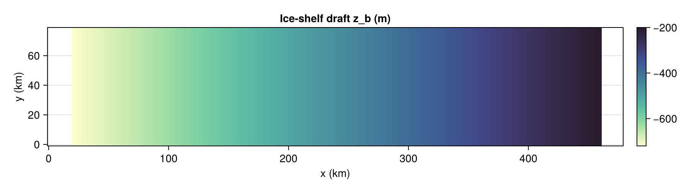
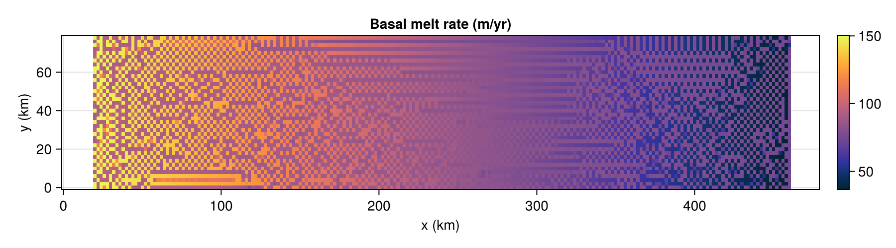
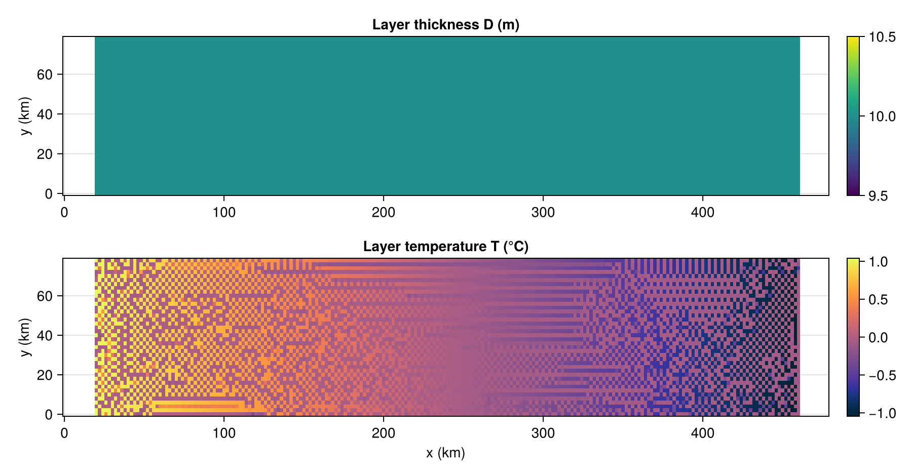
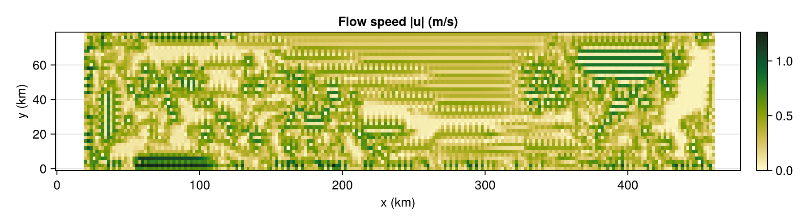
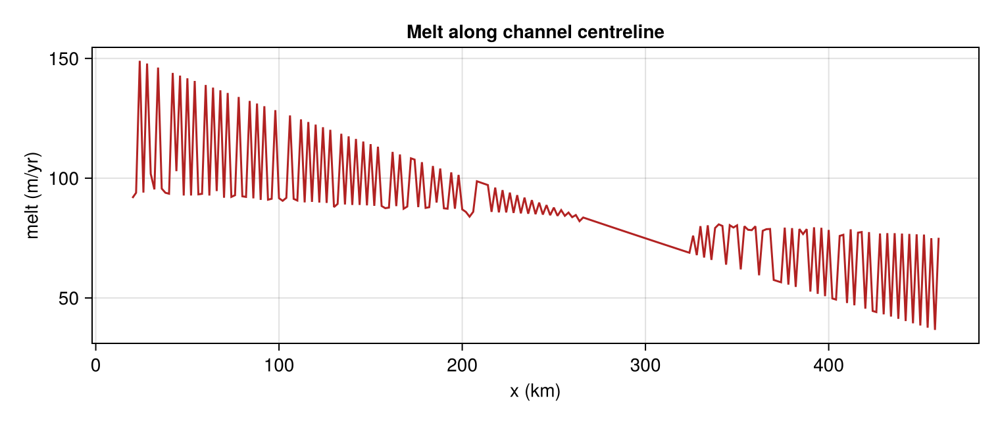

ISOMIP+ warm-cavity simulation
This example builds the idealised ISOMIP+-style channel cavity, runs the model for a few days, and visualises the resulting fields. The geometry is a sloping ice draft (deep at the western grounding line, shallow at the eastern ice front) in an 80 km-wide channel, forced by the ISOMIP+ warm profile.
The parameters are summarised in the table below.
| symbol | value | meaning |
|---|---|---|
| $\Delta t$ | 210 s | time step |
| $\nu$ | 0.8 | Robert–Asselin filter strength |
| $\Delta x, \Delta y$ | 2 km | grid spacing |
| $f$ | $-1.37\times10^{-4}$ s⁻¹ | Coriolis parameter |
| $C_d$ | $2.5\times10^{-3}$ | drag coefficient |
| $C_d^{\text{top}}$ | $1.1\times10^{-3}$ | drag in $u_\star$ |
| $A_h$ | 6 m²/s | Laplacian viscosity |
| $K_h$ | 1 m²/s | diffusivity |
| $\gamma_T^{\text{fix}}$ | $1.8\times10^{-4}$ | turbulent heat exchange (fixed) |
| $\mu$ | 2.5 | Gaspar entrainment parameter |
| $D_\min$ | 1 m | minimum layer thickness |
| $\alpha$ | $3.733\times10^{-5}$ °C⁻¹ | thermal expansion |
| $\beta$ | $7.843\times10^{-4}$ psu⁻¹ | haline contraction |
This setup can be easily computed in Laddie.jl:
using Laddie
using CairoMakie
CairoMakie.activate!(type = "png")
m = build_isomip(; isomipcond = :warm)
run!(m; days = 3.0, verbose = false)A small helper: strip the grounded border, mask everything outside the ice shelf to NaN (so it renders transparent), and orient the array so that x (along-cavity) is horizontal and y (across-cavity) vertical.
function field(m, A; peryr = false)
a = peryr ? A .* Laddie.spy : A
a = ifelse.(m.tmask .> 0, a, NaN)
Z = permutedims(a[2:end-1, 2:end-1]) # [y,x] → [x,y]
x = (0:size(Z, 1)-1) .* (m.dx / 1000)
y = (0:size(Z, 2)-1) .* (m.dy / 1000)
return x, y, Z
endGeometry: ice-shelf draft
x, y, ZB = field(m, m.zb)
fig1 = Figure(size = (900, 250))
ax = Axis(fig1[1, 1], xlabel = "x (km)", ylabel = "y (km)", title = "Ice-shelf draft z_b (m)")
hm = heatmap!(ax, x, y, ZB; colormap = :deep)
Colorbar(fig1[1, 2], hm)
fig1
Basal melt rate
Melt peaks near the deep grounding line (west), where the layer meets the warmest ambient water — the classic ISOMIP+ pattern.
x, y, M = field(m, m.melt; peryr = true)
fig2 = Figure(size = (900, 250))
ax = Axis(fig2[1, 1], xlabel = "x (km)", ylabel = "y (km)", title = "Basal melt rate (m/yr)")
hm = heatmap!(ax, x, y, M; colormap = :thermal)
Colorbar(fig2[1, 2], hm)
fig2
Layer thickness and temperature
x, y, D = field(m, m.D.present)
x, y, T = field(m, m.T.present)
fig3 = Figure(size = (900, 470))
ax1 = Axis(fig3[1, 1], ylabel = "y (km)", title = "Layer thickness D (m)")
hm1 = heatmap!(ax1, x, y, D; colormap = :viridis); Colorbar(fig3[1, 2], hm1)
ax2 = Axis(fig3[2, 1], xlabel = "x (km)", ylabel = "y (km)", title = "Layer temperature T (°C)")
hm2 = heatmap!(ax2, x, y, T; colormap = :thermal); Colorbar(fig3[2, 2], hm2)
fig3
Flow speed
The buoyant meltwater accelerates up-slope toward the ice front; Coriolis steers it against a side wall.
spd = sqrt.(Laddie.im_half(m.U.present).^2 .+ Laddie.jm_half(m.V.present).^2)
x, y, SP = field(m, spd)
fig4 = Figure(size = (900, 250))
ax = Axis(fig4[1, 1], xlabel = "x (km)", ylabel = "y (km)", title = "Flow speed |u| (m/s)")
hm = heatmap!(ax, x, y, SP; colormap = :speed)
Colorbar(fig4[1, 2], hm)
fig4
Along-cavity melt transect
Melt rate along the channel centreline, from grounding line to ice front.
jmid = size(m.tmask, 1) ÷ 2
mline = ifelse.(m.tmask[jmid, 2:end-1] .> 0, m.melt[jmid, 2:end-1] .* Laddie.spy, NaN)
xx = (0:length(mline)-1) .* (m.dx / 1000)
fig5 = Figure(size = (760, 320))
ax = Axis(fig5[1, 1], xlabel = "x (km)", ylabel = "melt (m/yr)",
title = "Melt along channel centreline")
lines!(ax, xx, mline, color = :firebrick)
fig5
Summary statistics
mx, mn, sp = meltstats(m)
println("mean melt = ", round(mn, digits = 2), " m/yr")
println("max melt = ", round(mx, digits = 2), " m/yr")
println("max speed = ", round(sp, digits = 3), " m/s")mean melt = 87.48 m/yr
max melt = 150.12 m/yr
max speed = 1.263 m/sThis page was generated using Literate.jl.